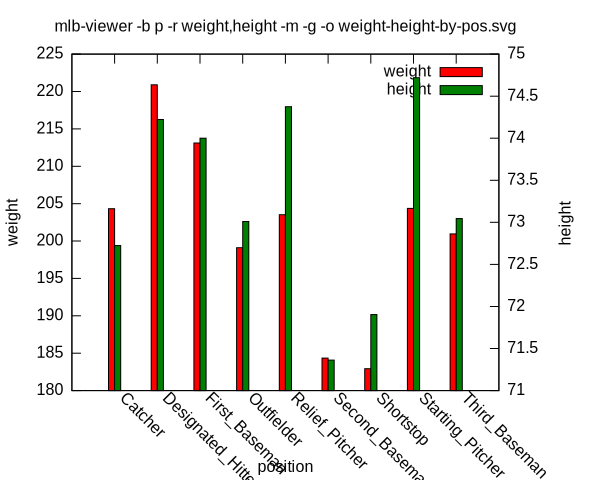

available from github.com/eschulte/data-wrapper
Wrap text data in a portable shell script allowing easy (re)-analysis.
R for statistical analysisgnuplot for graphical display of dataRun data-wrapper on your file of tab-separated data passing in a
name for each column.
data-wrapper DATAFILE [COLUMN NAMES]
This will result in the creation of an executable file named
DATAFILE-viewer. This file holds all of your data wrapped in a
script which provides numerous views into the data. For more
information on usage and available outputs and analysis call
DATAFILE-viewer -h.
This example will use Major League Baseball player height and weight data from wiki.stat.ucla.edu available at mlb.txt as a text file. The wrapped executable script version of this data is available at mlb-viewer.
First data-wrapper is used to convert the raw text file into an
executable.
$ ./data-wrapper mlb.txt name team position height weight age
Wrote script to mlb-viewer.
Because gzip compression is used, the executable is slightly smaller than the original text file.
$ ls -1s mlb.txt mlb-viewer
48 mlb.txt
32 mlb-viewer
With the -h option we can view the functionality provided by the
new mlb-viewer executable. For this example only long-form
options and column names will be used.
$ ./mlb-viewer -h
Usage: mlb-viewer [options...] [action]
Options:
-h --help ------------- print this help message
-i --include COL=STR -- only include items with COL=STR in results
-e --exclude COL=STR -- exclude items with COL=STR from results
-b --by [COL,...] ----- group results by COLs (comma separated)
-r --result [COL,...] - print results for COLs
(comma separated, defaults to age)
-g --graph ------------ graph mean of results (requires gnuplot)
-o --output FILE ------ save output to FILE
Actions (specify at most one to reduce results):
-m --mean ------------- mean of all matching results
-s --sum -------------- mean of all matching results
-c --cor -------------- Pearson correlation between two categories
-t --t-test ----------- t test between all groups of results
(use at most one category, requires R)
-k --ks-test ---------- Kolomogorov-Smirnov between all groups of
results (at most one category, R)
-n --normal-test ------ Shapiro-Wilk test for normality (requires R)
Columns (COL):
One of name, team, position, height, weight, age.
Unique sub-strings may be.
Examples:
to print a table of the mean value by name and team, use:
mlb-viewer -b name,team -m
to calculate the total value by name, and graph the results to an
svg file, use:
mlb-viewer -b name -m -g -o /tmp/by-lang.svg
First lets look at the mean age by position. If no result column is specified, the last column is assumed which in this case is the age of the payer.
$ ./mlb-viewer --by position --mean
Catcher 29.5637
Designated_Hitter 30.3894
First_Baseman 29.4747
Outfielder 28.9535
Relief_Pitcher 28.5398
Second_Baseman 29.0269
Shortstop 28.4029
Starting_Pitcher 28.1105
Third_Baseman 28.6911
However other result columns may be specified.
$ ./mlb-viewer --by position --result weight --mean
Catcher 204.329
Designated_Hitter 220.889
First_Baseman 213.109
Outfielder 199.113
Relief_Pitcher 203.517
Second_Baseman 184.345
Shortstop 182.923
Starting_Pitcher 204.361
Third_Baseman 200.956
It is also possible to view results sorted by up to two column at once; in this case by both team and position.
$ ./mlb-viewer --by team,position --result weight --mean
[30x9] Catcher Designated_Hitter First_Baseman Outfielder Relief_Pitcher Second_Baseman Shortstop Starting_Pitcher Third_Baseman
ANA 201.667 NA 204.2 200.625 201.5 NA 180 207.143 192.5
ARZ 208.5 NA 219 200.6 208.857 185 180 220.286 200
ATL 215 NA 220 201.571 206.571 176.667 190 189 192.5
BAL 201.667 197 199 179.714 195 176 209 207.571 215.5
BOS 210 230 220 202.857 203.364 180 175 210.778 210
CHC 209.667 NA 212.5 203.75 210 175 180 203.636 195
CIN 202.333 NA 205 202.5 210.909 185 198.5 174.462 193.333
CLE 200 240 225 193.5 208.462 178.333 185 206 185
COL 198 224 204 193.571 200.75 177.5 190 201.5 210
CWS 242.5 219.5 215 201.25 219.125 185 187 210.143 207.5
DET 204 200 222.5 203.333 210.75 187.667 183.667 204.429 195
FLA 217.5 NA 180 194.143 204.167 200 182.5 215.4 205
HOU 186.667 NA 205 212 202.3 186.2 170 195.714 210
KC 205 225 212.5 196.667 193.333 180 165 199.667 210
LA 196 NA 203.667 200.333 204.4 200 165 223.167 187.5
MIN 210 217.5 228 197.6 202 178 180 210.286 185.333
MLW 203.75 NA 260 203.5 207 192.5 186.333 209.714 207
NYM 210 NA 209 195.143 196.154 181.5 175 203 200
NYY 197.5 230 210.333 197.2 217.5 189 195 209.429 210
OAK 203.333 226 207 211.2 191.364 180 181.667 208.75 188
PHI 197.5 205 230.5 193.833 188.818 187.5 167 199.875 190
PIT 212.5 NA 208.333 191.429 210.4 200 192 207.5 192
SD 215.5 200 220 206.571 203.615 182.5 205 201 NA
SEA 195 NA 228.5 193.143 202.2 181.5 170 201.375 220
SF 221.5 NA 212.5 200.714 204 185.5 175 205.429 197
STL 216.5 NA 207.5 196.667 199.636 182.5 165 206.333 230
TB 193.333 205 200 206.2 200.7 192 200 192.111 180
TEX 204.25 250 220 200.833 203.818 175 175 204 200
TOR 183.5 235 227 199.667 202.167 191.333 180 208.286 225
WAS 188 NA 227 200.286 202.714 160 189.333 197.167 210
Or to show multiple result columns at once; in this case both weight and height.
$ ./mlb-viewer --by position --result weight,height --mean
Catcher 204.329/72.7237
Designated_Hitter 220.889/74.2222
First_Baseman 213.109/74
Outfielder 199.113/73.0103
Relief_Pitcher 203.517/74.3746
Second_Baseman 184.345/71.3621
Shortstop 182.923/71.9038
Starting_Pitcher 204.361/74.7195
Third_Baseman 200.956/73.0444
If your system has gnuplot installed, then these results may be graphed.
./mlb-viewer --by position --result weight,height --mean --graph

If your system has R installed than statistical tests may be
performed on the data. In the following example, we use a T-test to
calculate the significance of the difference in weight distribution
between every pair of positions.
$ ./mlb-viewer --by position --result weight --t-test
[9x9] Catcher Designated_Hitter First_Baseman Outfielder Relief_Pitcher Second_Baseman Shortstop Starting_Pitcher Third_Baseman
Catcher 0(1) -3.0013(0.006741) -2.7985(0.006133) 1.0983(0.274) -0.6308(0.5295) 8.6385(1.698e-14) 7.9209(1.622e-12) -0.4657(0.6421) 1.0374(0.3026)
Designated_Hitter 0.068(0.9464) 0(1) 1.0724(0.2894) 3.0351(0.005718) -0.2695(0.7905) 3.3648(0.00137) 2.3718(0.02164) -1.4411(0.1628) 0.6865(0.4975)
First_Baseman 2.0533(0.04211) -1.3389(0.1923) 0(1) 1.8477(0.0677) 0.1388(0.89) 8.859(6.39e-14) 9.2609(3.951e-15) -0.8585(0.3929) 3.2605(0.001541)
Outfielder -2.3293(0.0211) -4.0482(0.0006707) -4.8479(5.578e-06) 0(1) -2.3686(0.01834) 7.5338(3.46e-12) 6.7259(1.105e-09) -2.0088(0.04535) -0.6119(0.5427)
Relief_Pitcher -0.3719(0.7105) -3.2436(0.004291) -3.3738(0.001141) 2.4421(0.01498) 0(1) 10.1182(<2.2e-16) 8.748(8.565e-14) -0.4046(0.686) 0.863(0.3914)
Second_Baseman -5.2198(7.418e-07) -6.7544(1.561e-06) -9.7673(1.419e-15) -0.9538(0.3425) -1.2284(0.2228) 0(1) 0.5741(0.5672) -3.126(0.002346) -5.4171(8.471e-07)
Shortstop -4.975(2.181e-06) -6.7943(7.445e-07) -8.4662(2.416e-13) -1.0042(0.3181) -1.5521(0.125) -0.684(0.4955) 0(1) -2.8295(0.005876) -5.3515(7.436e-07)
Starting_Pitcher 0.0129(0.9897) -3.0161(0.006639) -2.8489(0.005271) 2.4469(0.01484) -0.0967(0.923) 9.0082(<2.2e-16) 8.1678(2.15e-13) 0(1) 1.0684(0.2884)
Third_Baseman -1.2098(0.2292) -3.394(0.00217) -2.5162(0.01357) 0.7264(0.4701) -0.0625(0.9503) 4.8395(4.932e-06) 5.0668(2.017e-06) -1.5405(0.1284) 0(1)
T tests like the one above should only be used on normal distributions. We can test for normality of the distributions by position with the following.
$ ./mlb-viewer --by position --result weight --normal
Catcher 0.9787(0.2318)
Designated_Hitter 0.9174(0.116)
First_Baseman 0.9662(0.1242)
Outfielder 0.9857(0.04729)
Relief_Pitcher 0.9882(0.01176)
Second_Baseman 0.9829(0.5847)
Shortstop 0.9799(0.5205)
Starting_Pitcher 0.9085(2.126e-10)
Third_Baseman 0.9806(0.6437)
Turns out most of these look pretty normal, aside from the infield.